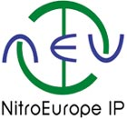

The NEU overall data management and main data archive have now been transferred to the Environmental Informatics Programme (EIP) of the Centre for Ecology and Hydrology (CEH) at Lancaster, UK. For conditions of access, please see the Data Portal on the NEU Integrated Project web page.